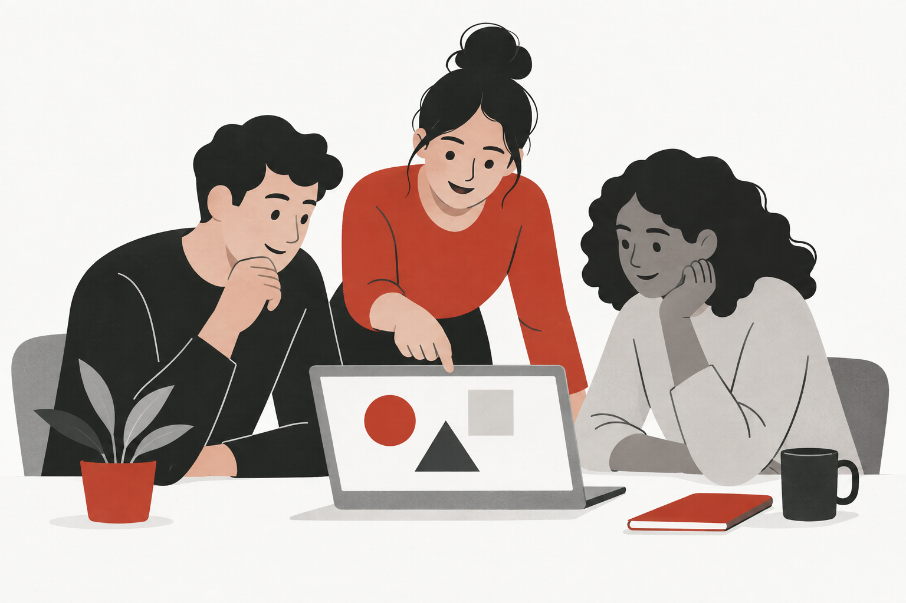

Nestlé / Project overview / Adoption
Global AI Adoption & Training
Facilitating workshops and training, developing learning content and monitoring AI adoption.

01 / Project focus
Training and enablement.
Global and regional AI adoption initiatives, combining training and workshop facilitation with content development and the monitoring of usage and adoption.
02 / My involvement
My contribution.
I facilitate workshops and training, develop training content and monitor usage and adoption.
03 / My responsibilities
Making adoption
part of everyday work.
Workshop facilitation
Facilitate workshops as part of global and regional AI adoption initiatives.
Training facilitation
Deliver training sessions that support the use of AI tools.
Training content development
Develop the content used to support training and enablement.
Usage and adoption monitoring
Monitor usage and adoption as part of the enablement work.
This public overview omits internal product names, interfaces, participant details and business data.
Explore my approach